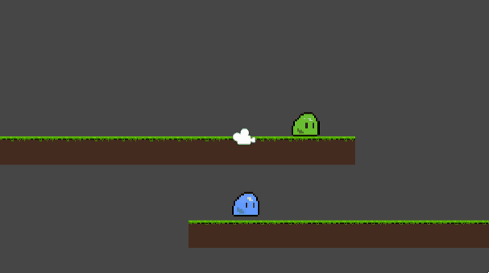
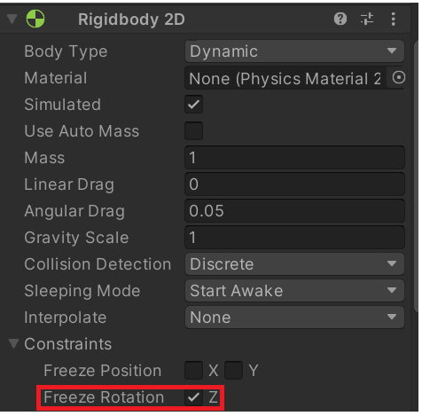
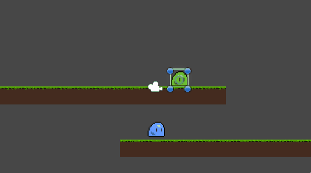

* 캐릭터 넘어짐 방지 Rigidbody2D _ Freeze Rotation
[목차]
#1 캐릭터 넘어짐 현상
#2 Rigidbody2D _ Freeze Rotaiton
*개인적인 유니티 공부 내용을 기록하는 용도로 작성된 글 이기에, 잘못된 내용이 있을 수 있습니다.
#1 캐릭터 넘어짐 현상
2D 횡스크롤 게임을 만들다 보면, 캐릭터 넘어짐 현상을 방지해야 할 경우가 있습니다. 그렇다면, 캐릭터 넘어진 현상은 무엇이고 왜 발생하는 것 일까요? 넘어짐 현상은 아래와 같이 플레이어가 중력을 받아 떨어질 때 Rotation 값이 변경되어 회전이 발생하는 것 입니다. 이러한 이유가 발생하는 이유는 중력으로 인한 Rotation 값을 고정하지 않았기 때문입니다.

#2 Rigidbody2D _ Freeze Rotation
해결 방법은 간단합니다. 플레이어 오브젝트를 클릭한 후, Rigidbody2D 컴포넌트로 이동하신 뒤에 Contraints의 Freeze Rotation 을 체크해 주시면 해당 오브젝트의 Rotation 값 변경이 발생하지 않습니다.
 